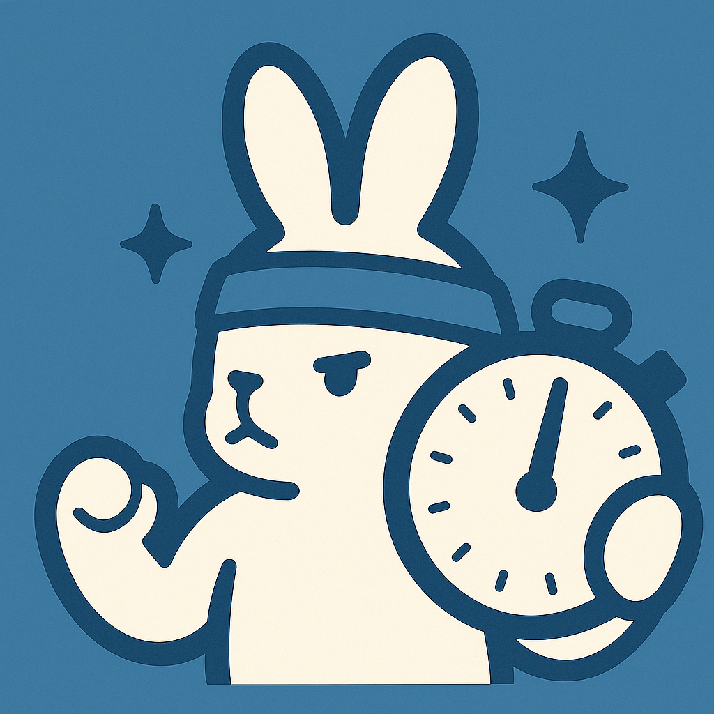
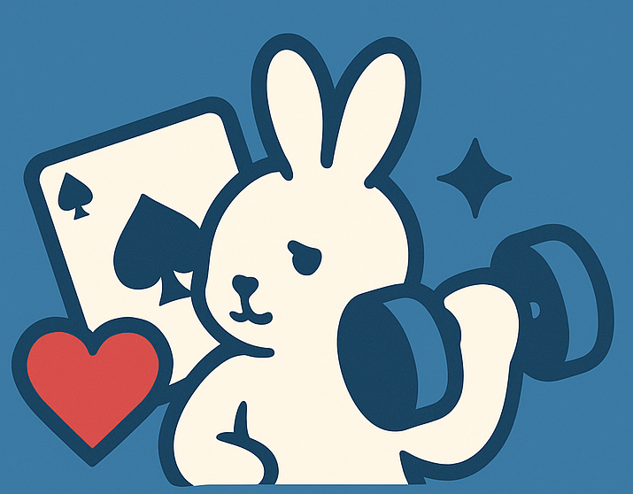
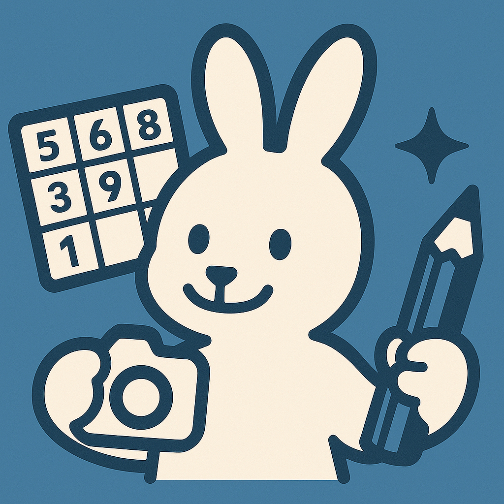
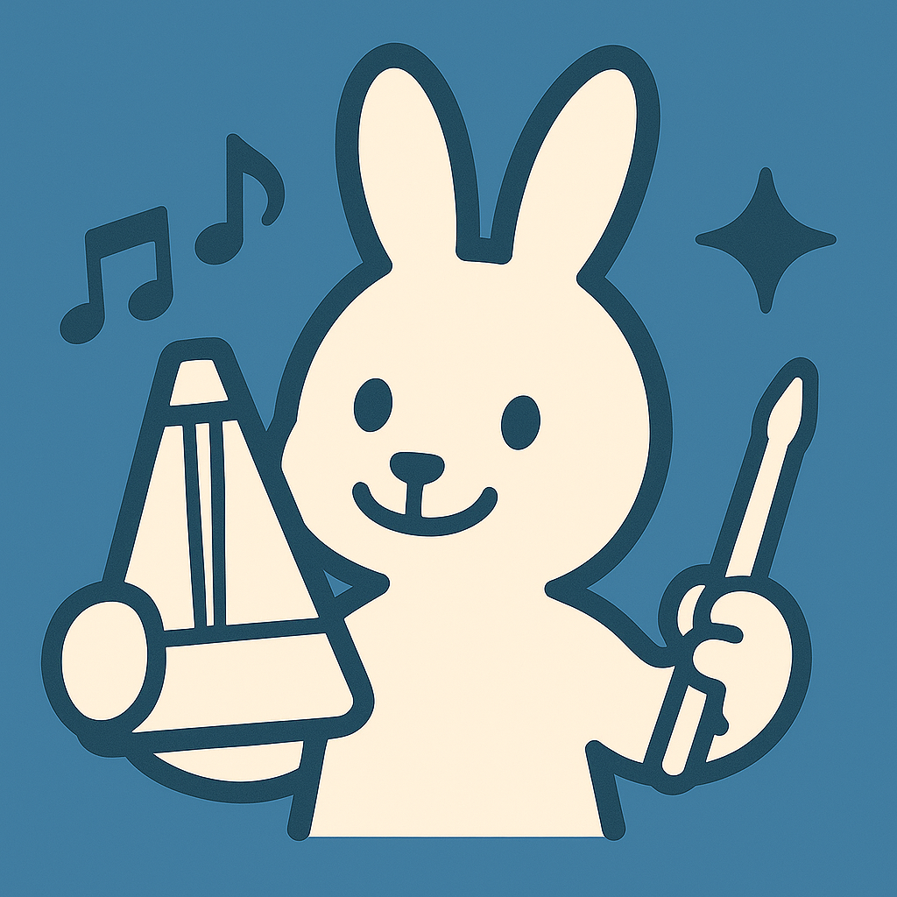
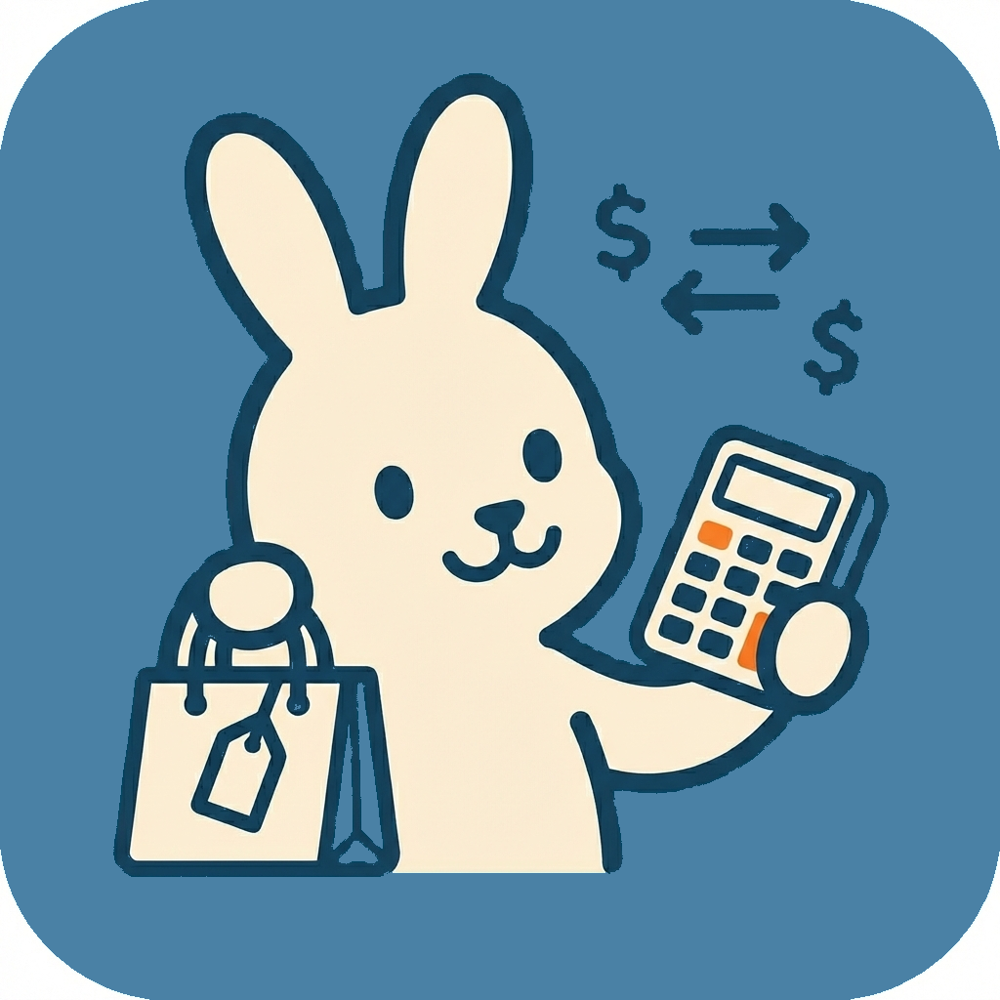
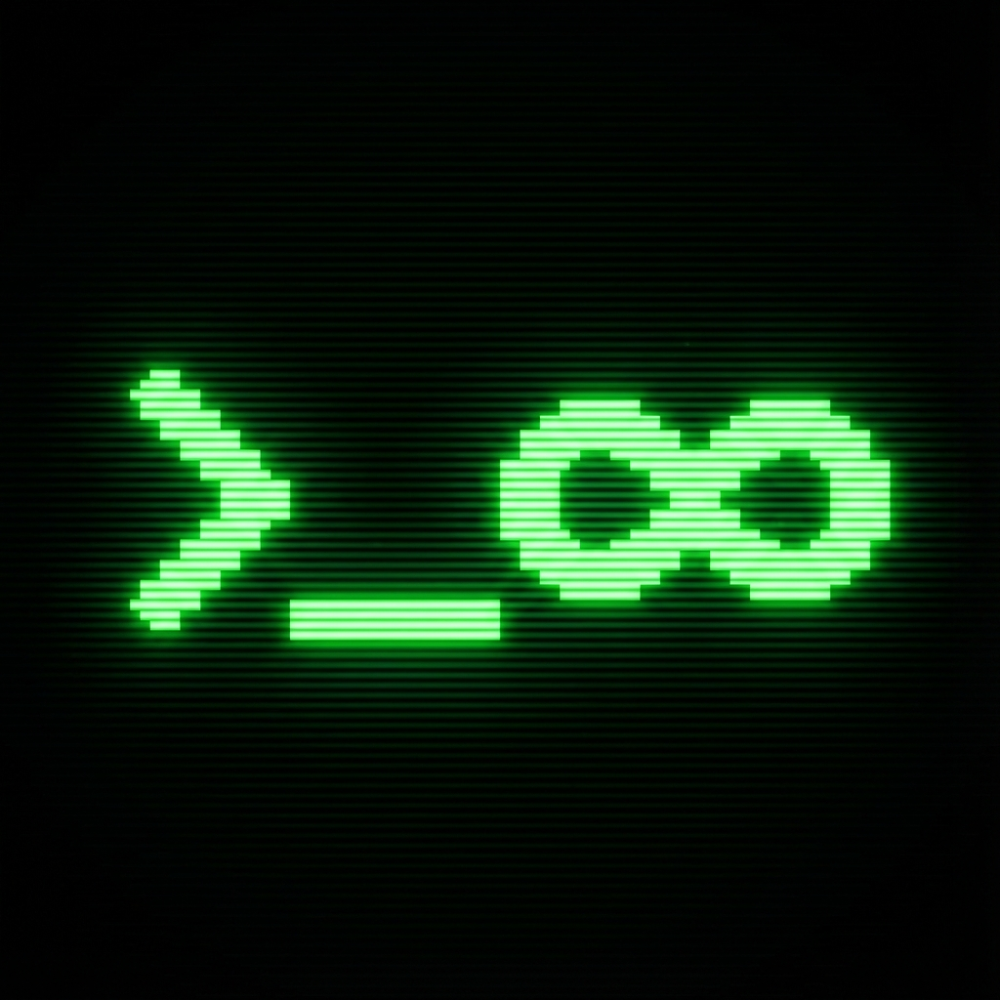
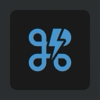

iOS Applications
iOSアプリ
Small applications designed for specific activities such as training, music practice, shopping, games, and everyday utilities.
トレーニング、音楽練習、買い物、ゲーム、日常の便利ツールなど、 特定の用途に特化した小さなiOSアプリを開発しています。
Building small and practical software tools for everyday problems. Explore iOS apps, browser extensions, and development projects created through hands-on experimentation and continuous improvement.
日常の中にある「もう少し便利になったらいい」という課題を、 小さなソフトウェアとして形にしています。 iOSアプリ、ブラウザ拡張機能、さまざまな開発プロジェクトを紹介しています。
t-okb-dev is a personal software development project focused on creating practical applications and browser extensions. The projects cover several areas including fitness, music, productivity, shopping, testing, and everyday utilities.
The goal is not simply to create another application, but to turn small ideas and everyday problems into tools that can actually be used. Each project starts with a specific use case and is developed by considering how the tool can be made simple, useful, and easy to understand.
This website documents the applications and browser extensions created through these projects. Individual project pages provide additional information about what each tool is designed to do, who it is intended for, and how it can be used.
t-okb-devでは、日常生活や仕事の中で感じた小さな課題を解決するために、 iOSアプリやブラウザ拡張機能などのソフトウェアを個人開発しています。 フィットネス、音楽、生産性向上、買い物、テスト、日常的なユーティリティなど、 実際の利用シーンを意識したさまざまなツールを制作しています。
目標としているのは、単にアプリの数を増やすことではありません。 「こういう機能があったら便利」という具体的なアイデアを、 実際に使えるシンプルなツールとして形にすることを大切にしています。 それぞれのプロジェクトでは、利用する場面や操作の分かりやすさを考えながら開発しています。
このサイトでは、開発したアプリやブラウザ拡張機能を紹介しています。 各プロジェクトの詳細ページでは、どのような目的で作られたツールなのか、 どのようなユーザーを想定しているのか、どのように利用できるのかを確認できます。
The projects on this site can be broadly grouped into three areas.
このサイトで紹介しているプロジェクトは、大きく3つの分野に分けられます。
Small applications designed for specific activities such as training, music practice, shopping, games, and everyday utilities.
トレーニング、音楽練習、買い物、ゲーム、日常の便利ツールなど、 特定の用途に特化した小さなiOSアプリを開発しています。
Browser-based tools that make repetitive tasks, testing, time management, and everyday development work more convenient.
繰り返し作業、テスト、時間管理、開発作業などを ブラウザ上で効率化するための拡張機能を開発しています。
Small software experiments that start from a simple question: "Could this everyday problem be solved with a small tool?"
「この日常的な問題を、小さなツールで解決できないか？」 という身近な疑問から始まるソフトウェアプロジェクトです。
A collection of iOS applications developed for specific, practical use cases. Each project focuses on keeping the core experience simple while providing useful features.
特定の用途にフォーカスして開発したiOSアプリです。 必要な機能を分かりやすくまとめ、できるだけシンプルに使えることを重視しています。

Simple Training Timer シンプル トレーニング タイマーA simple timer for round-based training such as Boxing, HIIT, and Tabata. Training intervals can be customized according to the user's workout.
ボクシング、HIIT、タバタなどのラウンド制トレーニングに 利用できるシンプルなタイマーです。 トレーニング内容に合わせてインターバルをカスタマイズできます。
View project details → プロジェクトの詳細を見る →
Trump Training トランプでトレーニングA workout application that uses playing cards to determine exercise repetitions. The random card-based approach adds variety to each training session.
トランプを引くことでトレーニング内容や回数を決める ワークアウトアプリです。 ランダム性を取り入れることで、毎回違ったトレーニングを楽しめます。
View project details → プロジェクトの詳細を見る →
Sudoku Scan & SolveA Sudoku utility that uses the device camera to scan a puzzle and provide a solution. It is designed to help users check answers or get hints when working on difficult puzzles.
カメラを使って数独パズルを読み取り、解答を確認できるユーティリティです。 難しい問題の答え合わせや、解答のヒントを確認したいときに利用できます。
View project details → プロジェクトの詳細を見る →
Rhythm Change Metronome シンプルメトロノームA metronome designed for musicians who want precise timing and structured rhythm practice.
正確なタイミングとリズム練習を重視するミュージシャン向けの メトロノームアプリです。
View project details → プロジェクトの詳細を見る →
Unit Price Comparator 単価比較計算機A calculator for comparing products based on their unit price. It helps users compare different package sizes and quantities using the same measurement.
商品の容量や数量が異なる場合でも、単位あたりの価格を計算して 比較できるユーティリティアプリです。 買い物をするときの価格比較をシンプルにします。
View project details → プロジェクトの詳細を見る →A self-care note application based on the ABCDE model of Cognitive Behavioral Therapy. It provides a structured way to organize thoughts and consider different perspectives.
認知行動療法（CBT）のABCDEモデルをベースに、 自分の考えを整理したり、別の視点から状況を考えたりするための セルフケアノートアプリです。
View project details → プロジェクトの詳細を見る →A structured note application based on Cognitive Behavioral Therapy concepts. It helps users organize their thoughts and consider more realistic perspectives.
認知行動療法（CBT）の考え方をもとに、 自分の考えを整理し、より現実的な視点を考えるための ノートアプリです。
View project details → プロジェクトの詳細を見る →An ear-training application for practicing interval recognition using realistic piano sounds.
実際のピアノ音源を使って、音程を聞き分ける練習ができる 相対音感トレーニングアプリです。
View project details → プロジェクトの詳細を見る →Ear training designed for bass players, including realistic bass sounds and a specialized walking-bass practice mode.
ベース演奏者向けの聴音トレーニングアプリです。 リアルなベース音源を使い、ウォーキング・ベースの練習にも対応しています。
View project details → プロジェクトの詳細を見る →An ear-training application for guitar players using realistic guitar sounds and melodic sequence exercises.
リアルなギター音源を使い、音程やメロディを聞き取る力を トレーニングできるギタリスト向けの聴音アプリです。
View project details → プロジェクトの詳細を見る →A simple entertainment application that lets users enjoy satisfying bone-cracking sounds with a flick gesture.
フリック操作で骨が鳴る音を楽しめる、 シンプルなジョーク・リラクゼーションアプリです。
View project details → プロジェクトの詳細を見る →Browser extensions created to simplify development work, testing, task management, and other repetitive activities.
開発作業、テスト、タスク管理など、 ブラウザ上で行う作業を少し便利にするための拡張機能です。
A form input assistant for software testing. It helps test engineers work with boundary values and other input scenarios more efficiently.
ソフトウェアテストで利用するフォーム入力を補助する拡張機能です。 境界値など、さまざまな入力パターンを効率よく確認するために利用できます。
View project details → プロジェクトの詳細を見る →
Infinity LoaderA playful extension that simulates an endless installation screen. It is designed as a simple joke and entertainment tool.
無限に続くフェイクのインストール画面を表示する ジョーク系のブラウザ拡張機能です。 シンプルな遊びとして利用できます。
View project details → プロジェクトの詳細を見る →
IDE Shortcut CheatsheetA quick reference tool for keyboard shortcuts used in development environments such as VSCode, IntelliJ, Android Studio, and Xcode.
VSCode、IntelliJ、Android Studio、Xcodeなど、 開発環境で利用するショートカットをブラウザから 素早く確認できるリファレンスツールです。
View project details → プロジェクトの詳細を見る →A task management tool that combines TODO items with time tracking. It includes tags, memos, and CSV export for reviewing work time.
TODO管理と時間計測を組み合わせたブラウザ拡張機能です。 タグ、メモ、CSVエクスポートなどの機能を利用して、 作業内容と時間を記録できます。
View project details → プロジェクトの詳細を見る →A timezone lookup and conversion tool for people who work with teams or contacts in different parts of the world.
世界中のタイムゾーンを検索・確認できるユーティリティです。 海外のチームやユーザーとやり取りするときの 時差確認をシンプルにします。
View project details → プロジェクトの詳細を見る →The projects on this site are built around a simple development process: identify a practical problem, create a small solution, test it through actual use, and improve it over time.
このサイトで紹介しているプロジェクトでは、 「実際に困っていること」を出発点として、 小さな解決策を作り、実際に使いながら改善していくことを大切にしています。
Many projects begin with a small inconvenience: measuring training intervals, comparing prices, checking timezones, remembering development shortcuts, or practicing musical intervals.
トレーニングの時間を測る、商品の価格を比較する、 海外との時差を確認する、開発用ショートカットを調べる、 音程を練習するなど、身近な不便を出発点にしています。
Small tools are most useful when the user can understand what they do quickly. The projects therefore focus on a clear purpose and a straightforward user experience.
小さなツールは、何ができるのかをすぐに理解できることが重要です。 そのため、それぞれのプロジェクトでは目的を明確にし、 できるだけ分かりやすい操作性を意識しています。
Building different types of software provides opportunities to experiment with different interfaces, workflows, and technical approaches.
異なる種類のソフトウェアを実際に作ることで、 UI、操作フロー、データ管理、さまざまな技術的アプローチを 試しながら学んでいます。
A project does not necessarily end when the first version is released. Feedback, testing, and actual usage can reveal new problems and opportunities for improvement.
アプリや拡張機能は、最初のバージョンを公開して終わりではありません。 実際の利用やテストを通して新しい課題を見つけ、 必要に応じて改善していくことを大切にしています。
If you are looking for a specific tool, start with the iOS Apps or Browser Extensions sections above. Each project has its own detail page with additional information and links related to that project. For support and privacy information, please visit the Support & Privacy page.
特定のツールを探している場合は、上の「iOSアプリ」または 「ブラウザ拡張機能」から目的に合ったプロジェクトを探してください。 各プロジェクトには詳細ページがあり、さらに詳しい情報を確認できます。 アプリのサポートやプライバシーに関する情報については、 「サポート・プライバシー」ページをご確認ください。